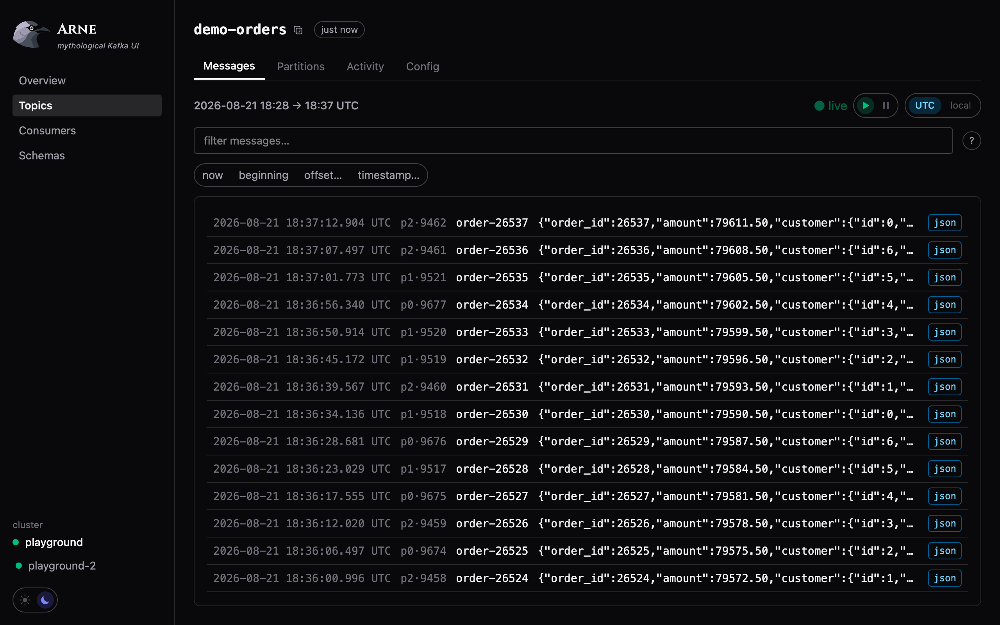

A fast, honest Kafka UI.
Because the other ones are slow, and they lie about what is actually in your cluster.



Why another Kafka UI
Every Kafka UI can list your topics. The problems start with everything else:
pages that take ten seconds to paint, a "messages" count that is really a
subtraction of two offsets nobody sampled at the same time, lag that quietly
omits the partitions it could not read, and dashboards that keep showing you a
number long after it stopped being true.
Arne is built on two rules.
It never lies. Every metric carries the timestamp of the sample it came
from. A total that cannot be computed completely says so — lag summed from a
partial snapshot renders as ≥ 4.2k, never as a confident total. A partition
that no live member owns is labelled unassigned, because lag nobody is
draining is the thing you actually need to see. A message that fails to decode
appears in the results, loudly, instead of vanishing.
It is gentle with your brokers. Every broker call is demand-driven, shared
and bounded. Load follows the refresh policy — never the number of open tabs,
never the size of the cluster. An idle Arne makes zero broker calls, and
that is asserted by tests rather than hoped for.
Quick start
cat > config.yaml <<'YAML'
clusters:
- name: local
bootstrap: localhost:9092
server: { port: 8080 }
YAML
docker run -p 8080:8080 -v $(pwd)/config.yaml:/etc/arne/config.yaml simoexpo/arne-kafka-ui:latestOpen http://localhost:8080. That is the whole installation: one container, no
database, no agent, no sidecar. State lives in Kafka or in memory, nowhere else.
Images are published for linux/amd64 and linux/arm64, both built natively.
SASL, TLS and Schema Registry are configured in the same file — see
config.example.yaml. Passwords can be given as
${ENV_VAR} and are redacted from every log line and error message.
What it does
|
|
| Overview |
Cluster health, brokers, and the topics worth looking at first |
| Topics |
Partitions, replication, and the worst partition's in-sync count — flagged when ISR < RF |
| Messages |
Browse, filter and live-tail. Jump to an offset, a timestamp, the beginning or now |
| Filtering |
key=, value:, JSON paths (value.customer.id=42), negation, numeric comparison, with autocomplete |
| Decoding |
JSON, Avro, Protobuf and Schema Registry-framed payloads — failures shown, never skipped |
| Consumers |
Groups, state, protocol, members and lag; per-partition ownership, idle members, unassigned partitions |
| Schemas |
Subjects, versions, compatibility level and a compatibility checker |
| Multi-cluster |
As many as you like in one config; one broken cluster never blanks the page |
Read-only for now
v1 observes and never mutates: no offset resets, no topic creation, no message
production — so pointing it at production is a non-decision today. Write
operations are planned, starting with consumer-group offset management, and the
architecture was built not to preclude them.
Kafka 4 and KIP-848
Groups using the new consumer protocol are reported correctly — state, members,
assignor and per-partition ownership. That matters more than it sounds: the
legacy DescribeGroups API reports such a group as Dead with no members
while it is happily consuming, which is what most tools still show you.
How it stays fast
- One binary. Rust and axum, with the React frontend embedded via
rust-embed. No web server to configure, no node process in production.
- Nothing polls in the background. Throughput sampling, lag, group
descriptions — all triggered by a request that needs them, all cached per
cluster and shared by every viewer.
- No request scales with the cluster. Not with topics, partitions or
groups. Lag is fetched for the rows on screen and nothing else.
- Bindings for what the client library skipped.
DescribeCluster,
ListOffsets, ListConsumerGroups, DescribeConsumerGroups and
ListConsumerGroupOffsets are bound directly to librdkafka, replacing
per-broker fan-outs and per-partition loops with single batched calls.
- Costs are measured, not assumed. A diagnostic endpoint exposes what
librdkafka counted itself sending, per broker and per API, so a page's cost
is a number rather than an opinion.
Development
Requires Rust (stable), Node 20.19+, Docker, and optionally
just.
cp config.example.yaml config.yaml # then point it at your cluster(s)
just dev # backend on :8080 + vite dev server (proxies /api to it)
just test # backend + frontend test suites
just lint # clippy + frontend build
just docker # build the production image
just playground # local Kafka + schema registry + demo producers
just smoke # end-to-end smoke check (needs Google Chrome)
Without just:
(cd backend && cargo run -- ../config.yaml) & # dev
(cd frontend && npm run dev) &
cd backend && cargo test # test
cd frontend && npx vitest run
cd backend && cargo clippy --all-targets -- -D warnings # lint
cd frontend && npm run build
docker build -t arne-kafka-ui:dev . # image
docker compose -f docker-compose.dev.yml up -d # playground
node scripts/smoke.mjs # smoke
The playground
just playground brings up two independent local Kafka brokers (ports 9092 and
9093), a schema registry against the first, and demo producers writing JSON to
demo-orders (cleanup.policy=delete), demo-users (compact) and
demo-audit (compact+delete), plus consumer groups — including one on the
KIP-848 protocol with two members — so every page has something real to show.
Point config.yaml at localhost:9092 and/or localhost:9093.
The advertised listeners assume Docker Desktop, which resolves
host.docker.internal. On plain Docker Engine on Linux, add
extra_hosts: ["host.docker.internal:host-gateway"] to the kafka and
kafka2 services, or give each broker a dual listener instead.
How this codebase works
- Always TDD. Test first, watch it fail, then implement. The tests are the
specification; there is no design document to drift out of date.
- The code is the documentation. Reasoning lives next to what it explains,
where it cannot rot separately.
- Conventions and product principles:
CLAUDE.md.
Contributing
Issues and pull requests are welcome. Please keep the TDD rule and run
just test && just lint before opening a PR.
Credits
Wordmark font: Cinzel by Natanael
Gama, SIL Open Font License 1.1, bundled via @fontsource.
Arne is named after a bird.